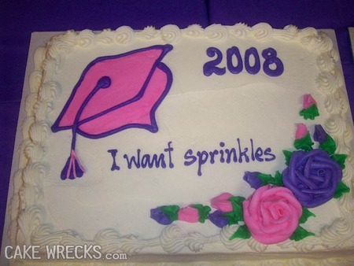

User Story Mapping
Kul med gula lappar

Martin Carlsson, @ystromm
Jeff

Flat backlogs don’t work for me.
Dokument fungerar halvbra
Platta listor förmedlar inte struktur


Hur skivar man en platt lista?

Riskhantering blir svårt utan struktur.
Gary och backloggen!
Hur gick det till?
Vad händer?
- Visuellt
- Fysiskt
- Enkelt
- Samarbete
- Samtal
Hur gör man då?
- Rama in: Produktidé, användare, mål
- Den stora bilden: En mil bred, en centimeter djup
- Utforska
- Släppbara skivor
- Utvecklingsbara skivor
- Mål
- Användare
- Aktiviteter
- Ryggrad
- Släppbar skiva
- Berättelse och tid
Vad vill du ändra i världen?
todo: Exempel på mål...
Användare
Personas funkar bra.
Ett system kan också vara en användare!
Aktiviteter
todo: Exempel på stora historier...
Nu har vi fått en ryggrad och ett flöde, en berättelse!
Utforska
todo: Exempel på detljer...
Fyll på med detaljer och alternativ.
Ryggrad
Spinosaurus
Hyvla fram ett experiment
todo: Exempel på experiment...
Skiva efter risk eller vinster.
En enkel(?) övning
- Mål: Ta mig till jobbet!
- Användare: Ni.
- Utmaning: Vad är en minimal älskbar produkt?
30 minuter?
En lite krångligare övning
- Vi har en vision!
- Vi ska ta bort smärtan från utläggsrapportering!
- Vi är Shoebay!
Den lille utläggaren
- En resa om året.
- Köper en låda magic chart och lite post-its nån gång.
- Tvungen att kolla hur man gör varje gång.
- 70%
Den stora utläggaren
- Flera resor per år.
- En massa bjudluncher.
- 10%
Chefen
- Godkänner utlägg för upp till 10 personer.
- 10%
Ekonomi
- todo: Vad gör dom?
- 10%
Skivor
Gör en skiva.
Största möjliga tyssstnad
- Tyst brainstorm
- Tyst gruppering
60 minuter?
Vad har jag upptäckt?
- Visuellt; Varför så få lappar i "Ta bort"?
- Fysiskt; berättelserna sätter sig i kroppsminnet.
- Inte så mycket techno-babbel.
- Skapar massor av små och stora samtal.
- Tillståndsgrafer funkar också!
Vad upptäckte ni?
Boken
Resurser
- Jeff Patton, The New User Story Backlog is a Map
- Christophe Achouiantz, User Story Mapping: Konsten att dela upp kravbilden på "rätt" sätt
- User Story Mapping with Jeff Patton
- Mia Kolmodin, Lean UX kravställning av Kungliga Operans planeringssystem
- Ulrika Malmgren, Var inte en risk för ditt team
- Sunit Parekh, Story Mapping, Visual Way of Building Product Backlog
- Matt Wynne, Introducing Example Mapping
- Gojko Adzic, Impact mapping
- Andreas Hägglund, Agile Requirements with User Story Mapping